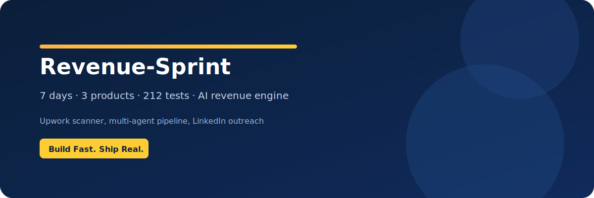

Problem
Lead discovery, scoring, and proposal prep were manual and inconsistent, slowing down revenue cycles and limiting throughput.
Solution
- RSS scanning with scoring heuristics and persistence
- 4-agent proposal pipeline with structured outputs
- Reusable product launch kits for outbound campaigns
Proof Assets


Results
Speed to Execution
Full system delivered in a 7-day build sprint.
Repeatable Output
Automated pipeline standardizes quality and reduces prep time.